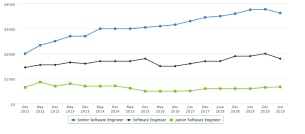

<section class="section">
    <div class="container container__fluid">
        <header class="section__header">
            <h2 class="section__title">Почему выбирают IT</h2>
        </header>

        <ul>
            <li>
                <p>
                    Работа в иностранных компаниях, карьерный рост и поддержка
                    развития, корпоративные поездки и возможность постоянно
                    путешествовать
                </p>
            </li>
            <li>
                <p>
                    Зарплата начинающих IT-специалистов в Украине стартует от
                    $650. Доход опытных разработчиков начинается от $2000 и
                    доходит до $4000 у управленцев.
                </p>
            </li>
            <li>
                <p>А сколько денег для счастливой жизни нужно тебе?</p>
            </li>
        </ul>
        <p2 class="section__text">Динамика зарплат программистов</p2>
        <p>По данным 133368 анкет</p>
        <p>JavaScript</p>
        <picture>
            <source
                media="(min-width: 900px)"
                srcset="
                    ../images/img/chart-pc-min.jpg    1x,
                    ../images/img/chart-pc@2x-min.jpg 2x
                "
            />
            <source
                media="(min-width: 600px)"
                srcset="
                    ../images/img/chart-tab-min.jpg    1x,
                    ../images/img/chart-tab@2x-min.jpg 2x
                "
            />
            
        </picture>
    </div>
</section>
